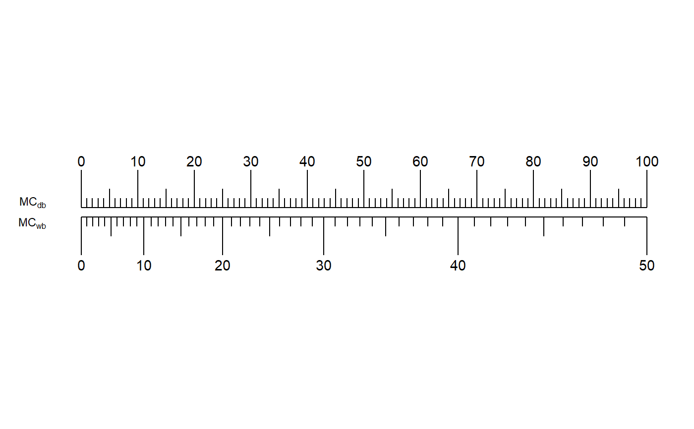
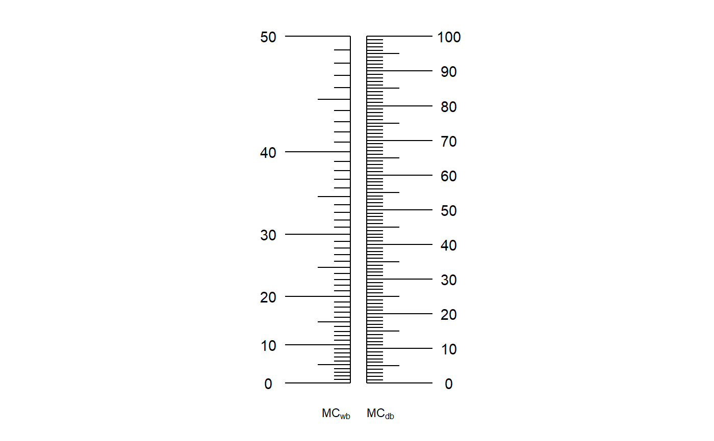
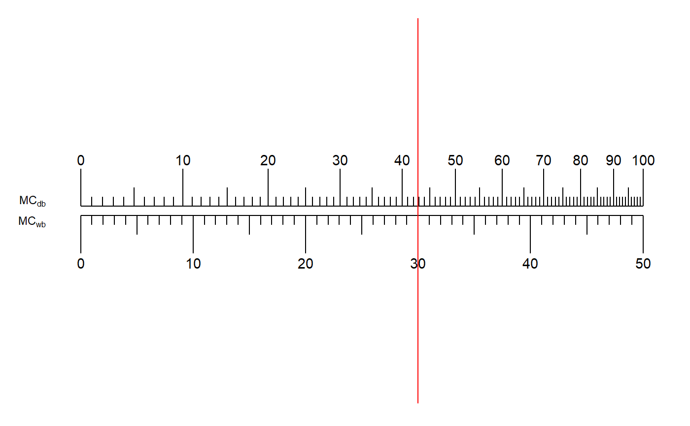
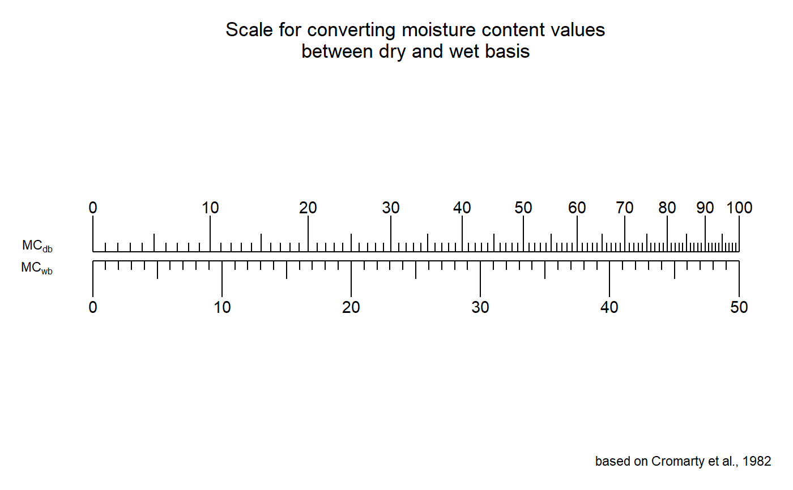

R/wet2dry.R
wet2dry.RdThese functions convert from moisture content determined on wet/fresh weight
basis to equivalent value on dry weight basis and back.
MoistureNomograph plots the nomograph for these conversions.
dry2wet(mc) wet2dry(mc) MoistureNomograph(min, max, basis = c("wet", "dry"), horiz = FALSE)
| mc | Moisture content. |
|---|---|
| min | Minimum value of moisture content to be plotted in nomograph. |
| max | Minimum value of moisture content to be plotted in nomograph. |
| basis | The basis on which moisture content is estimated |
| horiz | If |
For wet2dry and dry2wet, the converted moisture content
(%).
For MoistureNomograph, the nomograph as an object of class
ggplot.
Conversions between moisture content (%) determined on wet weight basis MCwb and that on dry weight basis MCdb are computed based on the formulae of Cromarty et al., (1982) as follows:
MCdb = 100 × MCwb ⁄ 100 − MCwb
MCwb = 100 × MCdb ⁄ 100 + MCdb
MCwb = [wi − wf] ⁄ wi
MCdb = [wi − wf] ⁄ wf
Where, wi is the initial weight and wf is the final weight.
If the moisture content (mc) for conversion is beyond limits (0-50 %
for wet2dry and 0-100 % for dry2wet), a warning is issued.
Cromarty A, Ellis RH, Roberts EH (1982). The Design of Seed Storage Facilities for Genetic Conservation, Revised 1985 and 1990 edition. International Board for Plant Genetic Resources, Rome, Italy.
#---------------------------------------------------------------------------- # Moisture content (wet basis) to moisture content (dry basis) #---------------------------------------------------------------------------- wet2dry(25)#> [1] 33.33333# Warning if moisture content is beyond limits (0-50 %) wet2dry(60)#> Warning: "mc" is beyond limits (0 < "mc" < 50)#> [1] 150wet2dry(-10)#> Warning: "mc" is beyond limits (0 < "mc" < 50)#> [1] -9.090909#---------------------------------------------------------------------------- # Moisture content (dry basis) to moisture content (wet basis) #---------------------------------------------------------------------------- dry2wet(30)#> [1] 23.07692# Warning if moisture content is beyond limits (0-100 %) dry2wet(-10)#> Warning: "mc" is beyond limits (0 < "mc" < 100)#> [1] -11.11111dry2wet(110)#> Warning: "mc" is beyond limits (0 < "mc" < 100)#> [1] 52.38095#---------------------------------------------------------------------------- # Nomograph #---------------------------------------------------------------------------- # Horizontal MoistureNomograph(min = 0, max = 50, basis = "wet", horiz = TRUE)MoistureNomograph(min = 0, max = 100, basis = "dry", horiz = TRUE)# Vertical MoistureNomograph(min = 0, max = 50, basis = "wet", horiz = FALSE)MoistureNomograph(min = 0, max = 100, basis = "dry", horiz = FALSE)# Nomograph is a "ggplot" object nom <- MoistureNomograph(min = 0, max = 50, basis = "wet", horiz = TRUE) library(ggplot2) nom + geom_hline(aes(yintercept=30), colour = "red")p <- "Scale for converting moisture content values\nbetween dry and wet basis" cap <- "based on Cromarty et al., 1982" nom + labs(title = p, caption = cap) + theme(plot.title = element_text(hjust = 0.5))